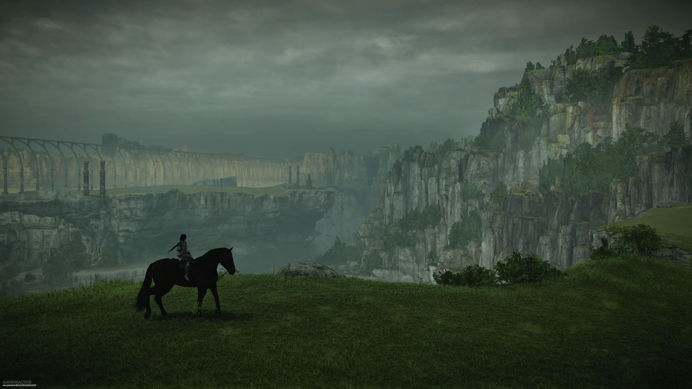

UMA EXPERIÊNCIA SOBRE VIDEOGAMES
Talvez exista um jogo que também faça parte da sua história.
Histórias, mundos e experiências que mostram que videogames podem ser arte.
Começar a explorar →
01 — UMA REFLEXÃO
Videogame é arte?
E se uma história pudesse ser vivida, e não apenas assistida?
Existem jogos que nos fazem sentir coisas que nem sempre conseguimos explicar. Mundos construídos com cuidado, personagens que parecem reais e histórias que continuam conosco mesmo depois dos créditos.
Para mim, videogames são muito mais do que entretenimento. São experiências, formas de expressão e, acima de tudo, uma maneira de criar conexões.
